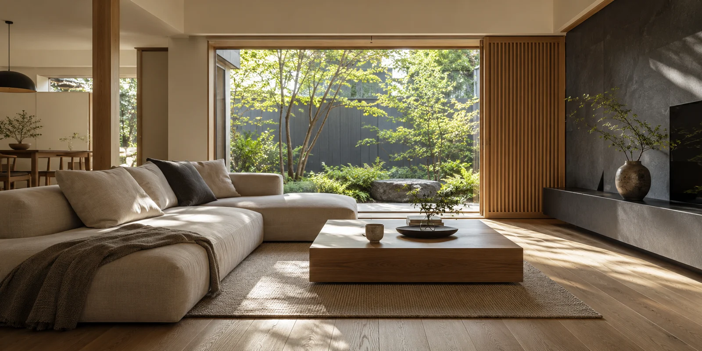

BUY A HOME
欲しい家から、続けたい暮らしへ。
余白市の戸建て・マンション・土地探しを、希望の整理から。
YOUR NEXT HOME
間取りの先にある
毎日を思い描く。
広さや価格が似ていても、そこで過ごす時間は違います。今の暮らしで変えたいことから、譲れない条件を整理しましょう。
内見では室内だけでなく、周辺環境や生活動線も確認。良いと思った理由を、家族と共有できる形にしていきます。

FIND YOUR PRIORITY
今の暮らしで変えたいのは？
気になる項目を選んで、内見の視点を整理できます。
内見の視点
明るさを「時間」で確かめる
窓の大きさだけでなく、普段家にいる時間帯の光の入り方や周囲の建物も見てみましょう。
BUYING GUIDE
購入までに確認すること
- 01
希望と予算を整理
購入代金と諸費用、購入後の支出を分け、無理のない検討範囲を考えます。
- 02
物件と周辺を確認
内見で見えたことと、資料で確かめることを分け、疑問を解消します。
- 03
条件を確かめて手続きへ
契約条件、支払い、引き渡しの予定を確認してから次に進みます。
FAQ
よくあるご質問
希望条件がまだまとまっていなくても相談できますか。
今のお住まいで変えたいことから整理します。「収納が足りない」「仕事に集中できる場所が欲しい」など、具体的な場面が出発点になります。
物件価格以外に何を確認しますか。
仲介手数料や登記などの諸費用、購入後の維持費、支払う時期などです。条件によって異なるため、個別に確認する項目を整理します。
START HERE
まだ決めていなくても、聞いていいことがあります。
買うか、売るか。その前に整理したい疑問から。